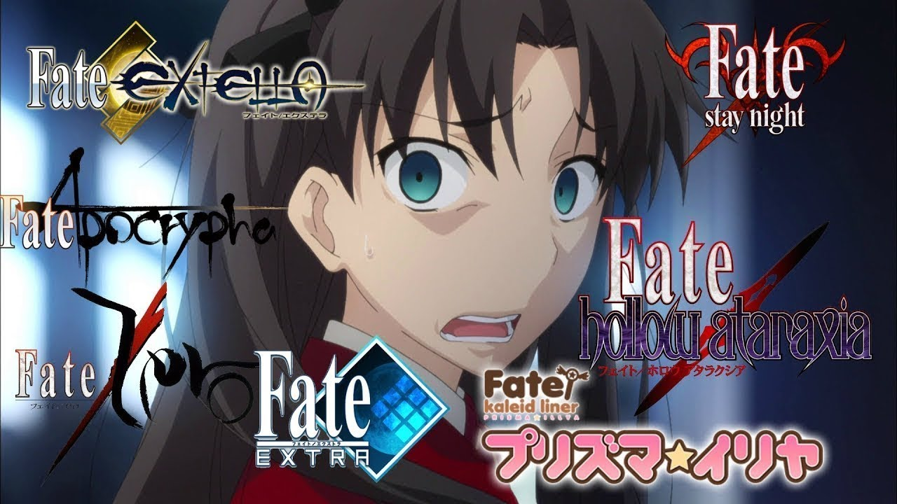

Icaro Farias
Sabe falar japonês, gosta de animes e de jogos.
Atua como discente na FVS.
Projeto da disciplina Programação WEB
Acesso para o currículo contido na plataforma Lattes

Icaro Farias
Sabe falar japonês, gosta de animes e de jogos.
Atua como discente na FVS.